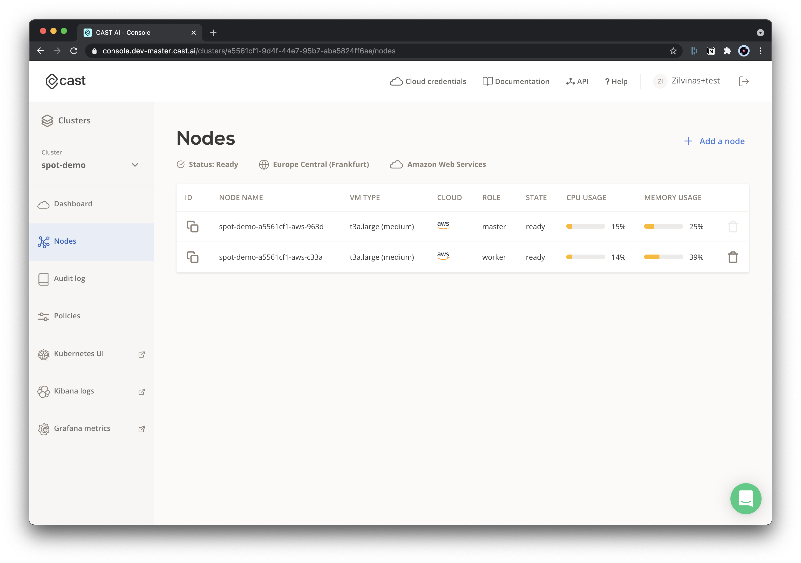
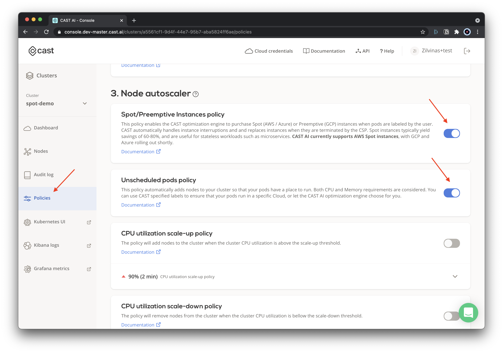
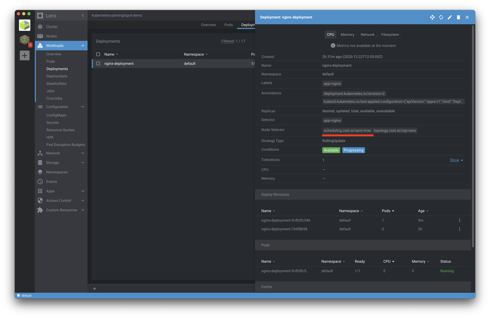
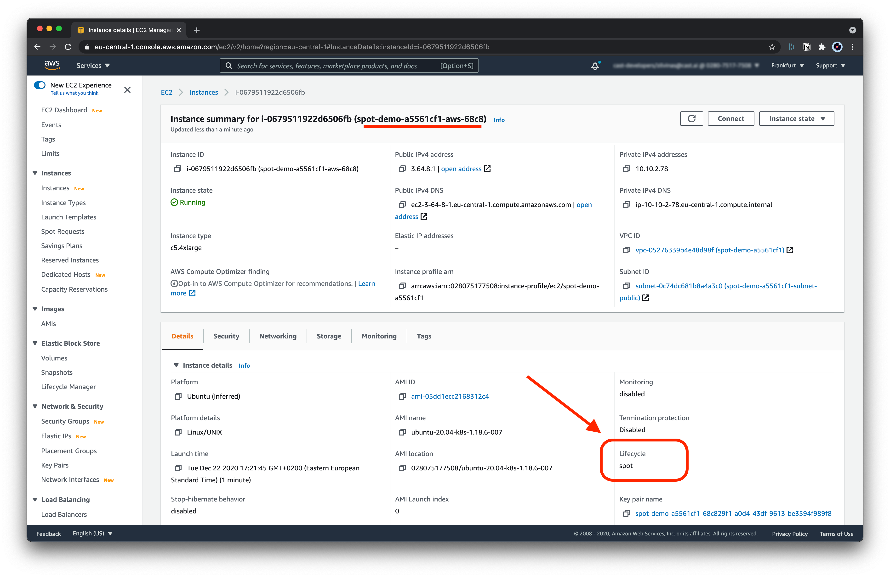

Spot/Preemptible Instances¶
The CAST AI autoscaler supports running your workloads on Spot/Preemtible instances. In this guide, we will show you just how easy it is to do that.
Available configurations¶
Tolerations¶
When a pod is marked only with Toleration, the Kubernetes scheduler could place such a pod/pods on regular nodes as well. This option should be preferred when spot instances are optional for your workloads.
...
tolerations:
- key: scheduling.cast.ai/spot
operator: Exists
...
Node Selectors¶
If you want to make sure that a pod is scheduled on spot instances only, in addition to tolerations, you must add nodeSelector as well.
That way, the autoscaler ensures that whenever your pod requires additional workload in the cluster, only a spot instance is picked to satisfy the needs.
...
tolerations:
- key: scheduling.cast.ai/spot
operator: Exists
nodeSelector:
scheduling.cast.ai/spot: "true"
...
Step-by-step deployment on Spot Instance¶
In this step-by-step guide, we demonstrate how to use Spot Instances with your CAST AI clusters.
To do that, we will be using example NGINX deployment configured to only be ran on Spot/Preemtible instances.
0. Pre-requisites¶
- Have a Kubernetes cluster on CAST AI
- Check Creating your first cluster if you need guidance.
Kubeconfigdownloaded and ready to use for deploying an example application to your cluster.

1. Enable relevant policies¶
To get started on using Spot instances autoscaler, you should enable two policies under Policies configuration in the UI:
- Spot/Preemptible instances policy
- This policy allows the autoscaler to use spot instances
- Unschedulable pods policy
- This policy requests an additional workload to be scheduled based on your deployment requires (i.e. run on spot instances)

2. Example deployment¶
Save the following yaml file, and name it: nginx.yaml:
apiVersion: apps/v1
kind: Deployment
metadata:
name: nginx-deployment
labels:
app: nginx
spec:
replicas: 1
selector:
matchLabels:
app: nginx
template:
metadata:
labels:
app: nginx
spec:
nodeSelector:
scheduling.cast.ai/spot: "true"
topology.cast.ai/csp: "aws"
tolerations:
- key: scheduling.cast.ai/spot
operator: Exists
containers:
- name: nginx
image: nginx:1.14.2
ports:
- containerPort: 80
resources:
requests:
cpu: '2'
limits:
cpu: '3'
2.1. Apply the example deployment¶
With Kubeconfig set in your current shell session, you can execute the following (or use other means of applying deployment files):
kubectl apply -f ngninx.yaml

2.2. Wait several minutes¶
Once the deployment is created, it will take up to several minutes for the autoscaler to pick up the information about your pending deployment and schedule the relevant workloads in order to satisfy the deployment needs, such as:
- This deployment tolerates spot instances
- This deployment must run only on spot instances
3. Spot Instance added¶
- You can see your newly added spot instance in the cluster node list.

3.1. AWS instance list¶
Just to double check, go to AWS console and check that the added node has the Lifecycle: spot indicator.
